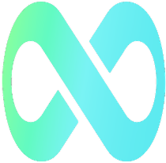
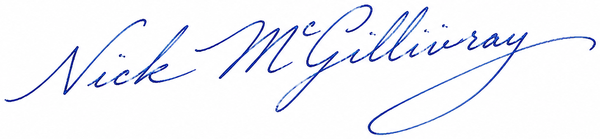
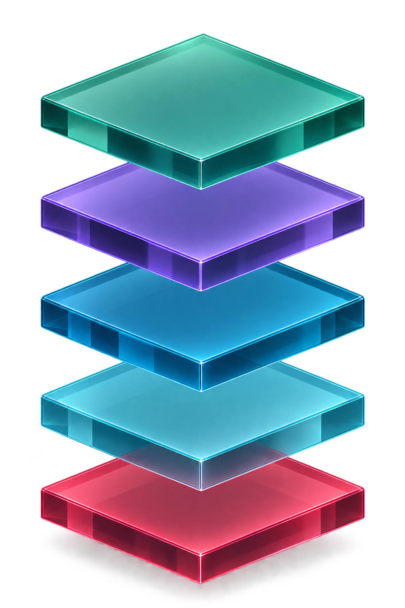
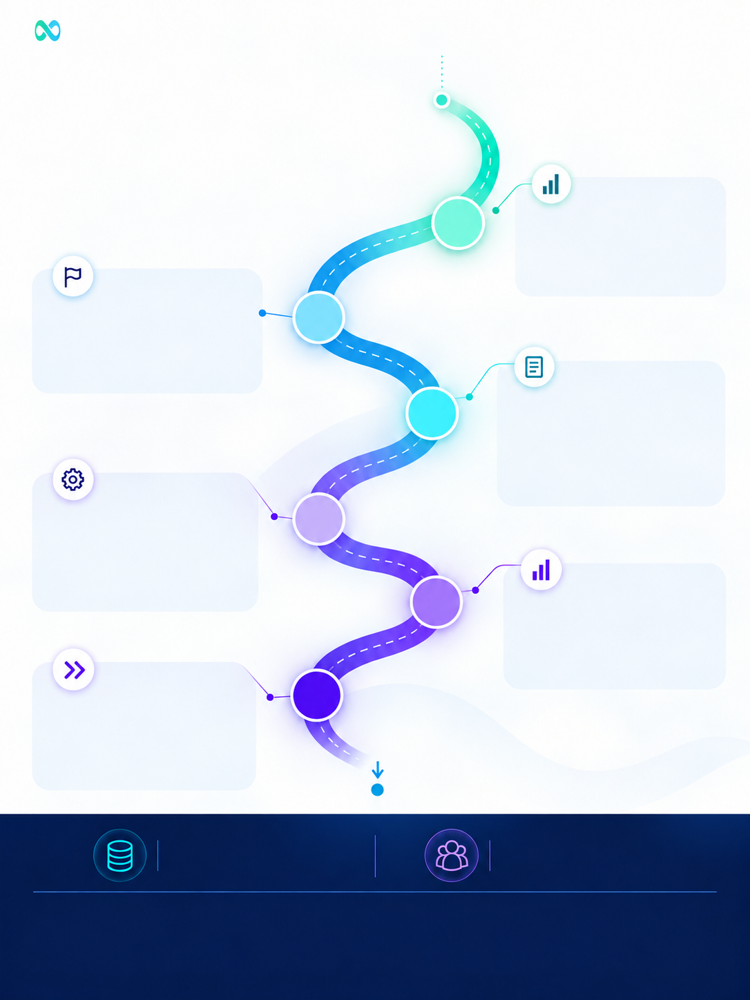
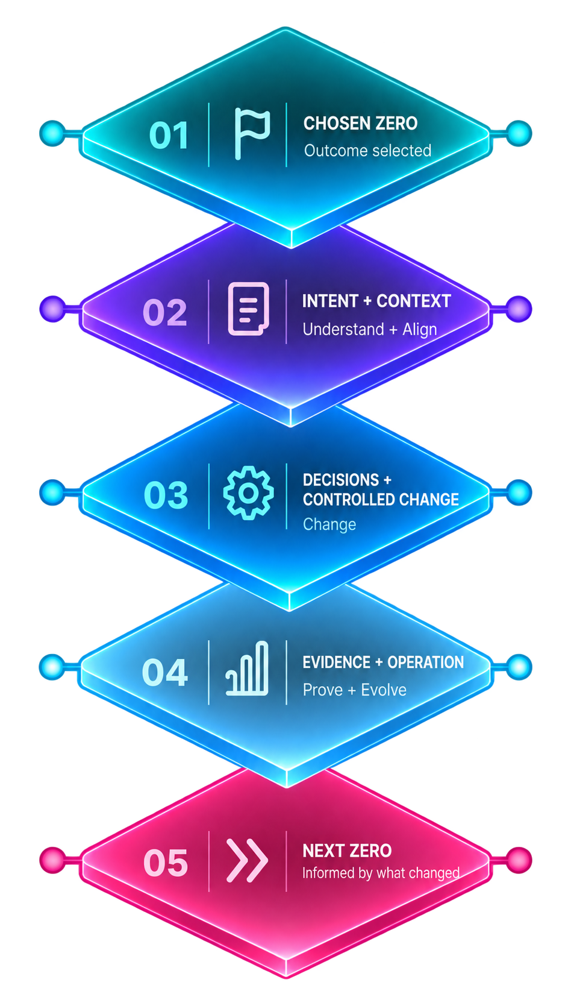
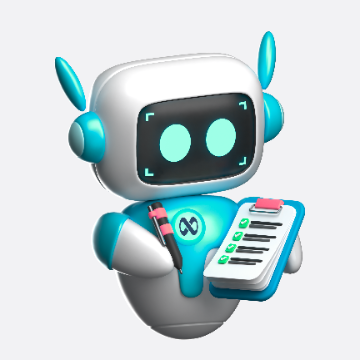

There has been a fundamental shift in the conversations I am having with customers.
A few years ago the question was what might AI make possible. Today the capabilities are here. ServiceNow is moving from AI that assists people to AI that interprets context, makes decisions and takes action.
So the question has changed. Most C-suite leaders I speak to are asking the same one:
When does IT
stop reacting?
For most enterprises the answer is not yet, and the reason is rarely the technology. It’s a CMDB nobody trusts, workflows nobody owns and governance that arrives too late.
Platforms get built in pieces, by different teams, under different assumptions. Context leaks away at every handover, and you end up with an estate where each part is correct, and nobody understands the whole.
We lead with that work because it’s unglamorous and it’s the whole job. Fix it and AI compounds. Skip it and you have an expensive assistant repeating your worst data back to you with confidence.
Having access to AI and being ready to use it are not the same thing. The distance between the two is your ServiceNow AI Readiness Gap.
AI makes execution abundant. It does not make understanding abundant. Point an agent at an estate nobody fully understands and it will carry out the wrong intent faster than any person ever could.
This is Track A of Preparing for the Autonomous Enterprise: a practical route from today’s IT operation towards trusted autonomy. It starts with Autonomous IT because the data, workflows and evidence already exist there. Oliver Nowak, our AI Practice Lead, explains why on page 09.
The Road to Zero is Crossfuze’s practical framework for helping organisations assess their ServiceNow AI readiness, identify the right ServiceNow Zero to pursue first and progressively earn greater permission to automate. The pages that follow answer four questions: What is the ServiceNow AI Readiness Gap? Are you ready? Where should we start? How do we get there?
Outcomes should be evidenced, not asserted. You will see the ServiceNow capabilities, the dependencies and the evidence to expect in your own estate.
The Autonomous Enterprise won’t arrive as one big transformation. You will build it in deliberate, measurable steps. Each one gives you proof rather than a promise, and proof is what gives you the confidence to keep evolving.

Start with Autonomous IT, then extend trusted autonomy across the wider enterprise.
With agentic AI, workflows can run end to end, from detection and diagnosis through to resolution, without unnecessary human intervention.
That shifts IT from reacting to tickets, outages and alerts towards preventing them, while people focus on the complex decisions, exceptions and relationships where human judgement matters most.
Humans stay in control. They set the policies, permissions and approval thresholds that determine what AI can do autonomously, what needs review and where human intervention is required.
Lee FarnsworthDirector, Growth & Market Operations, Crossfuze
Multiple hand-offs. Slower resolution. Siloed teams and tools.
Connected platform. Orchestrated action. Faster, better outcomes.
Human intervention only when judgement or approval is required.
ServiceNow’s framing, not ours. Zero is a direction of travel, not a date, and one platform, one data foundation and one governance model carry all five.
IT that predicts, prevents and acts,
not just reacts.
ServiceNow’s Five Zeros are a direction of travel, not a promise. ServiceNow capability is moving quickly. Whether your operation has the data, workflows, controls and evidence to safely pursue them is a different question.
Each Zero is an operational outcome, not a product you buy. Delivering one means assembling the ServiceNow capabilities the outcome needs, across five connected layers, grounded in trusted data and context and held within shared governance.

The weakest foundation sets the ceiling. A Zero is assembled from the capabilities it needs, and scoped to the smallest credible set.
Crossfuze mapping based on current ServiceNow positioningEach Zero is delivered through a different combination of ServiceNow capabilities, but the same rule applies: the outcome can only be as strong as the weakest foundation beneath it.
| Capability | What it contributes | Zero-Touch Support | Zero Service Outages |
Zero Asset Issues | Zero Severe Breaches |
Zero Misaligned Investments |
|---|---|---|---|---|---|---|
| Layer 01 · Governance | ||||||
| AI Control Tower | AI discovery, governance, security, observability and control | |||||
| Layer 02 · Data & Context | ||||||
| CMDB & CSDM | Trusted service and configuration context for AI, workflows and decisions | – | ||||
| Discovery | Continuously discovered infrastructure and CI visibility | – | – | |||
| Layer 03 · Apps & Modules | ||||||
| ITSM | Incident, request, problem, change and service-desk workflows | – | – | – | ||
| ITOM | Events, service mapping, AIOps and automated remediation | – | – | – | ||
| HAM | Hardware lifecycle, inventory, cost and risk control | – | – | – | – | |
| SAM | Software lifecycle, entitlement, compliance, spend and risk | – | ||||
| SecOps | Vulnerability and security incident response with service context | – | – | – | – | |
| SPM | Aligns investments, demand and delivery to strategy | – | – | – | – | |
| Layer 04 · Workflows | ||||||
| Flow Designer & IntegrationHub | Workflow automation and cross-system execution rails | |||||
| Layer 05 · AI & Agents | ||||||
| ServiceNow Otto & AI Agents | Reasoning, triage, summarisation and governed autonomous action | |||||
Every serious Autonomous IT conversation comes back to four questions, in this order. This guide answers each in turn, in ServiceNow terms, and closes with ten checks you can work through with your team.
The distance between what ServiceNow AI can do and what your organisation can safely let it do. What creates it, how it is defined, and how it gets closed.
Pages 10–13Can the estate support autonomy safely and reliably? CMDB and data quality, ITSM process maturity, Discovery and service mapping, HAM and SAM accuracy, knowledge, workflow reach and governance.
Pages 14–18 · Checks 01–04Each Zero scored against the value it creates and the ServiceNow AI Readiness Gap in front of it, then five pages in the same shape so they can be compared.
Pages 19–28 · Checks 05–07The ServiceNow capabilities and licensing involved, the governance that has to exist first, and the delivery and support model that gets you from where you are to the Zero you chose.
Pages 29–34 · Checks 08–10Ask a finance or HR team to show you what an agent did last quarter and you may get an anecdote.
Ask IT and you are more likely to get a record.
Ticket history. Configuration and service data. Change decisions, approvals and rollback. Resolution times, outage minutes, ownership and operational evidence.
That is not simply a technical advantage. It is an evidential one.
AI makes execution easier. Trust becomes the harder problem. The question is no longer what AI can execute, but whether the organisation has enough context, control and evidence to trust what happens next.
This is where Nick’s question, when does IT stop reacting?, becomes practical. IT stops reacting when the evidence is strong enough to let the platform identify, decide and act before a person has to step in.
Permission to automate
is earned.
So IT is the right place to begin: a controlled environment where greater autonomy can be introduced, observed and improved.
For an agentic workflow, we should be able to show what the system understood, what it changed, why it acted, which controls applied and what happened as a result.
Evidence makes accountability inspectable rather than rhetorical.
It also makes learning possible. A misrouted incident is visible. A failed remediation can be investigated. A change can be rolled back. What happened becomes context for the next decision.
Greater autonomy cannot mean weaker accountability. AI can take on more of the operational work, but named people still define the boundaries, own the controls and remain accountable for what runs autonomously.
You prove the data can be trusted. You prove the workflow behaves as expected. You prove the controls work. Then you expand the boundary.
Here the Five Zeros matter. They are not five isolated AI projects but measurable operational outcomes: fewer avoidable tickets, outages, asset issues and severe breaches, and less wasted investment. Each is a place to test whether greater autonomy produces a better result, and evidence for what should happen next.
The objective is not autonomy for its own sake.
It is the right level of autonomy, backed by the context, evidence and accountability required to keep evolving.
ServiceNow AI capability is arriving faster than most estates can safely absorb it. The gap is the distance between the two. This section names what creates it, defines it, and sets out how it gets closed.
ServiceNow’s own experience, and what we hear from CIOs, points to the same barriers repeatedly. The technology can be ready before the organisation is ready to trust it.
Data, teams and technology operate separately.
AI attached to individual solutions recreates the silos it was meant to remove.
Connect data, AI and workflows through a common platform.
AI cannot reason reliably from data it cannot trust.
Poor CMDB health, fragmented data and inconsistent knowledge reduce confidence in autonomous action.
Limits the autonomy ceiling and increases risk.
Automating an old process is not the same as redesigning the work.
Agents solve isolated tasks. Autonomous IT requires end-to-end workflows that allow AI to interpret context, make decisions and act.
Don’t automate what you already do. Reimagine the work.
Autonomy requires organisational permission, not just technical capability.
Teams need the skills, ownership, controls and confidence to allow AI greater authority, with clear accountability and human judgement where it is still needed.
Education, upskilling and clear governance unlock autonomy.
Together these barriers set the distance between what ServiceNow AI can do and what your organisation can safely let it do: the ServiceNow AI Readiness Gap, on page 12.
Data, AI & Agents, workflows and governance determine that distance.
The gap is not closed by buying more capability. It is closed by making the estate safe to hand it to.
Crossfuze assesses readiness across the foundations of data, AI & Agents, workflows and governance to identify what must change before autonomy can safely increase.

You do not close the gap in one transformation. You close enough of it to act safely, choose a bounded Zero outcome, carry the intent and operating context into controlled change, then prove what changed in operation.
Assess the estate, the foundations and the current boundary for autonomous action.
Choose the Zero where business value, operational need and readiness intersect.
Define the goal, workflow, AI role, measure and authority before anything is allowed to act.
Configure, integrate, test and prepare the organisation with the right governance and risk management.
Track adoption, value and risk in operation. Prove the outcome and capture what the relationship learns.
Use the evidence to increase permission, extend the workflow or prioritise the next Zero.
What the relationship learns travels forward.
Named people remain responsible.
The next Zero starts higher.
Page 12 names the gap. This section measures yours. Readiness is not a feeling. It is evidence about the condition of your estate, the controls around it and what autonomous action can safely be trusted to do.
ServiceNow’s crawl, walk, run progression gives the direction. Your evidence determines where your estate actually sits on the five-stage path to greater autonomy. Autonomy becomes practical at stage 03.
Manually maintained CMDB. Discovery absent or partial. Knowledge written once and never retired.
Discovery running but unmapped. ITSM standardised in places. Automation exists as scripts, not flows.
CSDM-aligned CMDB, service mapping for critical services, Flow Designer coverage, integrations in place.
ITOM correlating events to services. HAM and SAM reconciled. Agentic workflows in production inside limits.
Continuous discovery and remediation. Portfolio decisions fed by live operational data.
Your ServiceNow estate is the foundation. Data, AI, workflows and governance determine how far autonomous action can safely extend. Named people remain accountable across all four. Read as a decision loop (Sense, Decide and Act) on a Secure governance base, with named human accountability across every stage. Apps and modules are chosen when you choose the Zero, not scored before it.
CMDB/CSDM, Discovery and service mapping provide the context autonomous decisions depend on.
Trusted knowledge, decision logic and relevant operating context ground AI decisions.
Standardised workflows and integrations determine how far autonomous action can travel.
Decision rights, controls, audit, recovery and named ownership determine what AI is permitted to do.
The assessment scores the four foundations and places you on the five-stage readiness scale. It returns a stage, an overall readiness score, a score for each foundation and an indicative market position. This is a worked example, not a benchmark for your organisation.
Your estate has the core capabilities in place to start scaling AI, with measurable gains from orchestrating work end to end under governed oversight.
The contextual foundation AI relies on.
3 of 5 in placeWhere the work actually runs.
7 of 12 in placeThe AI and agent capabilities themselves.
6 of 9 in placeGuardrails, oversight and proof.
4 of 11 in placeStandardise and scale remaining workflows before expanding autonomy further.
Autonomous action can only progress as fast as your weakest foundation.
Indicative position based on the ServiceNow Enterprise AI Maturity Index 2026 (19 countries, 12 industries).
Close the workflow gap, keep governance above the line, then reassess before expanding autonomy.
Explore your assessmentSeven controls define the boundary for autonomous action: what can act, what it can touch, who owns it, how it is evidenced and how it can be stopped or reversed. Only 20% of enterprises have implemented AI testing, auditing and risk assessment. Source: ServiceNow Enterprise AI Maturity Index 2026
What is actually running?
Every agent, model and integration should be discoverable and owned. You cannot govern what you have not found.
How much does it matter?
Apply controls proportionate to the potential operational, regulatory and customer impact. Not every use case needs the same level of control.
What may it touch, change or approve?
Define what the agent can access, change, approve and spend, and where a person must decide. Autonomy needs explicit boundaries.
Can we show why it acted?
Record what the system saw, what it did and the evidence behind the action. If you cannot explain an action, you cannot properly assure it.
When does a human take over?
Define when work returns to a person, who owns it and how quickly they must respond. Autonomy needs a designed handover path.
How do we stop it?
Provide a controlled way to stop an agent or process immediately. Stop what is happening.
How do we undo it?
Define how an action is reversed and who owns recovery. Undo what has happened.
ServiceNow AI Control Tower can provide the inventory, governance and operational oversight layer. Crossfuze then maps the control model to customer policy and recognised frameworks such as NIST AI RMF and ISO/IEC 42001.
One accountable owner. Named service, operations, security and platform stakeholders.
You are ready only to the level your weakest foundation and control boundary allow.
Readiness is the intersection of estate condition, autonomy ceiling and permission to act.Five Zeros. Five different outcomes. The first one should not simply be the biggest prize on paper. Start where business value, ServiceNow readiness and estate fit point to the strongest next move.
Each Zero carries a measurable operational outcome. Which to pursue first is the question that follows.
These are ServiceNow business-value estimates, not five independently audited customer outcomes. Source: ServiceNow, ‘Autonomous IT: Where zeros make heroes’ · 2026 (vendor-published). ‘Numbers listed are estimates based on known customer outcomes and business value assessment projections. Your results may vary.’ — ServiceNow
There is no universal first Zero. Plot each outcome against the value it could create and the readiness gap standing in front of it. Start where value is high and the readiness gap is smallest. Everything else is sequencing, not rejection.
The Five Zeros share ServiceNow foundations.
Work completed for one can reduce the readiness work required for another. The first Zero is not only an outcome. It also changes the starting position for what comes next.
Choose the first Zero for the value it creates now, then use the shared foundations it builds to improve the starting position for what comes next.
The same ambition can require a different first move.
Your current ServiceNow estate determines what is credible now. These five common estate starting points show how existing capability changes the best starting Zero, and the enabling work needed to go further.
Incident, request and change are on-platform. Knowledge is uneven, with limited automation and little operational context.
Automate the everyday.
Core service workflows are established. Discovery and event visibility exist in part, but service context and automation are incomplete.
Predict and prevent disruption.
Asset data is broad but inconsistent. Discovery, HAM or SAM are present, but reconciliation, ownership and trust remain weak.
Trust what you have.
Security operations are active, but asset and service context are incomplete. Detection exists, yet response is more reactive than connected.
Stop threats earlier.
Multiple initiatives sit on the platform. Demand, portfolio and resource data exist, but alignment and benefits evidence are weak.
Invest in what matters.
Resolve the need before a ticket is raised.
Every issue becomes a ticket, and every ticket waits for a person.
Signals are understood, resolved and learned from without an interaction.
Poor knowledge. Fragmented workflows. Missing context at the point of decision. Systems that do not talk to each other.
Trusted knowledge. Standardised workflows. Integrated systems. Permissions defined before anything acts. Guardrails that hold under volume.
Find the high-volume, low-risk demand. Separate what needs a human from what exists only because the process says so.
Mostly knowledge content and process standardisation, not engineering. The cheapest of the five to reach, and the easiest to underestimate.
The highest action volume and the smallest actions: about 25 assists per run against 150 for a wide agentic run. Model the multiplier, not the unit.
Zero-touch is not a faster service desk. It removes the interaction.
Prevent disruption before it becomes an outage.
Every alert becomes an outage, and every outage becomes a war room.
Signals are correlated, predicted and remediated before service is lost.
Unreliable telemetry. Service context nobody trusts. Dependency maps out of date the week after they are built. Remediation that cannot be repeated.
Trusted service context. Accurate dependencies. Repeatable remediation. Escalation thresholds agreed in advance, not argued during the incident.
Baseline MTTR, MTTA and MTTD before improving any of them. You cannot prove prevention without knowing what today costs.
Telemetry and dependency accuracy make this the most engineering-heavy of the five. The same work raises the ceiling on Zero Asset Issues, so plan them together.
Fewer events, but correlate-and-remediate is a wide agentic run: nine to twenty tools at 150 assists, against 25 for a narrow one.
MTTR matters less when the incident never happens.
Know every asset: current, connected and trusted.
Every asset class is tracked separately, and the record drifts from reality.
One continuously understood estate, discovered rather than declared.
A different system and process for every asset class. Lifecycle data that ages faster than anyone can update it, so record and reality drift apart.
Normalised models. Continuous discovery. Assets mapped to the services they support. End of life visible early enough to plan, not react.
Start where assets already cause incidents. It is the fastest route to this Zero, and overlaps almost entirely with Zero Service Outages.
Discovery and normalisation across asset classes, mostly one-off and largely shared with the outages work. Budget it once, count the benefit twice.
The lowest ongoing consumption of the five: scheduled reconciliation at the 25-assist end. The return shows up as accuracy on the other Zeros.
You cannot autonomously manage what you cannot reliably see.
Contain risk before it becomes a breach.
Every detection joins a queue, and the queue decides what gets investigated.
Detections are contextualised and prioritised, so containment starts at the top.
Alert volume without context. Exposure data disconnected from the estate it describes. No agreed limits on what autonomous action may do.
Threat context tied to services and assets. Explicit action boundaries. An audit trail that holds at volume. Rollback is not optional.
Write down what AI may do without approval before enabling it, then enforce it in AI Control Tower so document and platform agree.
Mostly governance design, not engineering. The expensive part is agreeing boundaries across security, risk and IT, and it cannot be bought.
Typically 50 assists per enrichment run. The real variable is how much runs without approval, so consumption is a policy decision.
Decide in writing where human authority stays absolute.
Align strategy, investment and delivery.
Strategy says one thing; portfolio, projects and operations fund another.
Strategy, investment, delivery and services move as one line of sight.
Planning cycles slower than the work they are meant to direct. Application impact nobody can model. Objectives that live in one system and delivery that lives in another.
Portfolio decisions tied to live service and asset reality. Roadmaps that move when the evidence moves, not when the annual cycle allows.
Pick the one investment decision you could not currently defend with data, and work backwards from it until you can.
Joining portfolio, delivery and service data and changing the planning cadence. The largest organisational cost of the five, the smallest technical one.
The lowest volume, largest actions: whole-portfolio reasoning spans many tools, so budget 150 assists per run, peaking in planning cycles.
Autonomy without direction is faster execution of the wrong priorities.
Choosing the Zero defines the outcome ambition. Getting there means changing the estate without losing the intent, context and controls that made it worth pursuing.
The maturity curve shows where you are. The Road to Zero identifies where to move. The Crossfuze method governs how it is delivered and proved. We carry the intent and operating context into controlled change, then follow it into operation to prove what changed and what comes next.

The Crossfuze AI Readiness Assessment scores readiness separately from opportunity, so a valuable idea in an unready organisation is never mistaken for a safe one. The online version scores the four foundations shown on page 17. The 90-minute in-depth session breaks the same foundations into seven weighted dimensions.
Five anchors, nothing in between. Every score has to be argued.
Every finding carries one of six states, and its wording matches the state.
Missing evidence is never scored as zero.
Fix the foundation first, then reassess.
Design the use-case roadmap for the chosen Zero.
Three stages take you from readiness to a live outcome. Assess where you stand, design the roadmap, then execute through Crossfuze AI Run State (CARS).
Know where you stand.
Score readiness across data, workflows, AI & Agents and governance, and get a clear picture of what your data says.
Sequence the use cases.
Decide which use cases to deploy in the short, medium and long term. Set the autonomy boundary, controls and human approvals.
Deploy and run.
Build, test and go live, then hand over into run-state ownership. Work runs in 90-day cycles, each proving one bounded outcome before the next begins.
The AI Readiness Assessment shows whether trusted data, fit-for-purpose processes and the right governance are in place.
Address core dependencies so the outcome can be delivered and sustained.
Sequence the use cases, then execute through CARS.
Go-live delivers capability. Operation proves the outcome. Measure what actually changed, use the evidence to decide what happens next, and keep learning in operation.
ServiceNow business-value estimates and published customer outcomes (sources, page 37). Customer outcomes are not guaranteed; KPI targets require an agreed organisational baseline.
No separate purchase. No add-on SKUs. Existing SKUs reached end of sale on 1 July 2026, so the tier you renew on has to fit the Zero you are heading for.
ITOM and CSM have no Foundation tier. Advanced is now the minimum.
Heavy AI use burns the Assist pool 12× faster than light use.
Assists and Data Fabric credits are separate meters. Model both.
Remove bundled legacy line items and lock top-up pricing in writing.
Project a 12-month Now Assist consumption forecast across ServiceNow products and check it against your licence tier and allocation. Answers questions 02 and 03 in minutes.
Autonomous IT is not a technology decision alone. It is a readiness, control and outcome decision. Four questions frame this guide. These ten checks answer the last three.
Define the boundary of autonomous action, what remains human, and where risk is unacceptable.
AI needs current, connected and reliable data, knowledge and service context to act accurately.
We need explainability, controls, monitoring and a clear rollback path.
Score the four foundations set out on page 16. The lowest one sets the practical ceiling.
Start where there is real operational pain and a clear, measurable outcome.
Match ambition to what is practical with your platform, integrations, licence tier and data today.
If you cannot measure the before, the change and the result, you cannot credibly claim the Zero.
Is it data quality, fragmented workflows, missing ownership or weak controls?
The goal is not maximum autonomy. It is the highest level that can be safely operated, evidenced and governed.
Choose one bounded outcome where greater autonomy can be tested, measured and improved under control.
Two ways to begin. Both are free, and both give you the readiness baseline every Zero is built on.
Get your number in minutes, on your own time. Takes about 10 minutes.

A facilitated AI Readiness Assessment with the Crossfuze AI practice.
Source: ServiceNow, “Autonomous IT: Where zeros make heroes,” 2026 (vendor-published). “Numbers listed are estimates based on known customer outcomes and business value assessment projections. Your results may vary.”
Zero-Touch Support: ServiceNow estimate, ~75% reduction in Tier 1 tickets. Related: EY reports 75% reduction in overall service ticket volume across 1M+ tickets/year, 30 service desks (customer-reported; measures total volume, not Tier 1 specifically).
Zero Service Outages: ServiceNow estimate, 70–90% MTTR reduction. Related: Flight Centre Travel Group reduced MTTR by 80%, incidents by 50% (customer-reported; same metric).
Zero Asset Issues: ServiceNow estimate, 40–50% reduction in hardware/software/cloud spend. Related: Community Health Systems (with ServiceNow/KPMG) reports 40% savings in licence true-up costs, 95% of assets auto-tracked (customer-reported; narrower metric: licence true-up, not total spend).
Zero Severe Breaches: ServiceNow estimate, 70–90% improvement in containment time. Related: ServiceNow Now-on-Now reports 85% reduction in security incident close time (vendor’s own result; measures closure, not containment).
Zero Misaligned Investments: ServiceNow estimate, ~50% increase in on-time projects. Related: MKS Instruments reports 30% increase in on-time projects: same metric, named customer, lower result. ServiceNow SPM guidance cites 30% as a representative customer KPI.
Source: ServiceNow, “Enterprise AI Maturity Index 2026,” Workflow, 9 June 2026. Survey of 4,500 executives across 19 countries and 12 industries. servicenow.com/workflow/ai/enterprise-ai-maturity-index-2026.html. Basis for the benchmark context on page 17 (compared with 4,500 executives surveyed) and the finding on page 18 that only 20% of enterprises have implemented AI testing, auditing and risk assessment. The position on page 17 is an illustrative assessment output.
Sources: ServiceNow Workflow, 1 July 2026 · AI Summit Oslo, 18 June 2026, and Zurich, 2 July 2026 · World Forum New York, 10 September 2026. Insight, Automation and Autonomy are ServiceNow’s Autonomous IT ServiceOps phases, 5 May 2026, published against Zero Touch IT Support and Zero Service Outages; applying them across all five Zeros and across both tracks is Crossfuze’s reading.
Source: ServiceNow assist-consumption guidance, 2026. An agentic run using 0–4 tools consumes 25 assists, 5–8 tools 50 assists, and 9–20 tools 150 assists. The “12× faster” pool burn at heavy agentic use compares 150 with 25 assists per run and follows Crossfuze’s published pricing guidance.
Source: ServiceNow New Commercial Model Overview, April 2026. Process Mining included in Advanced and Prime only.